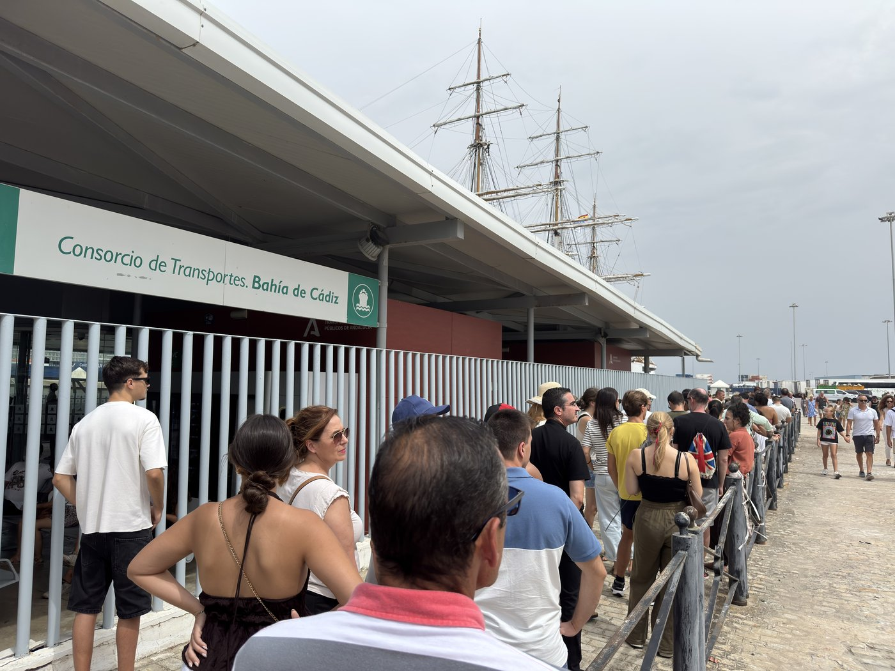
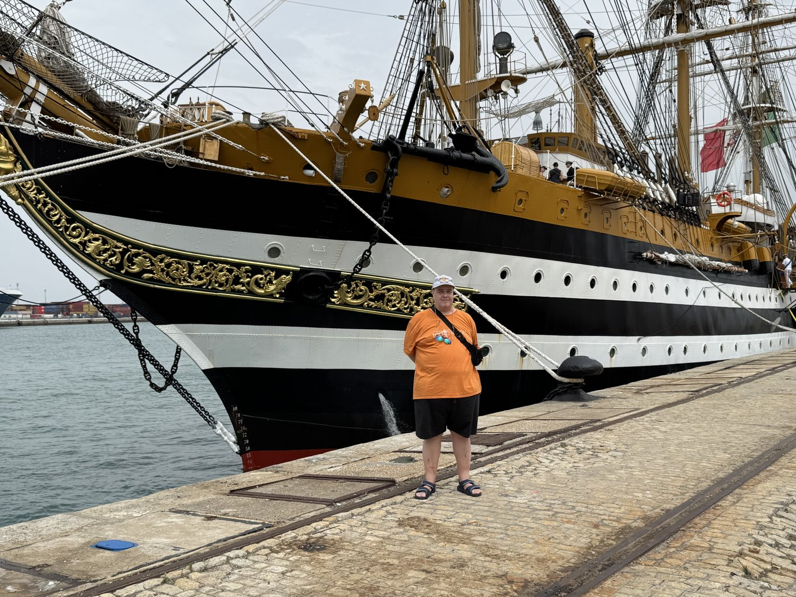
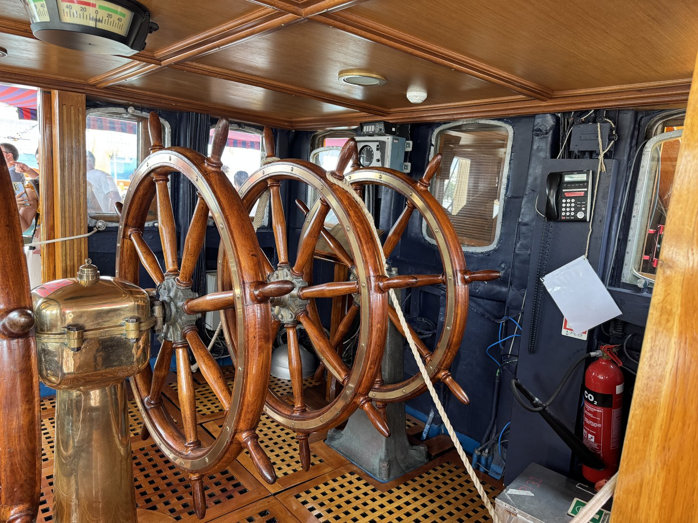
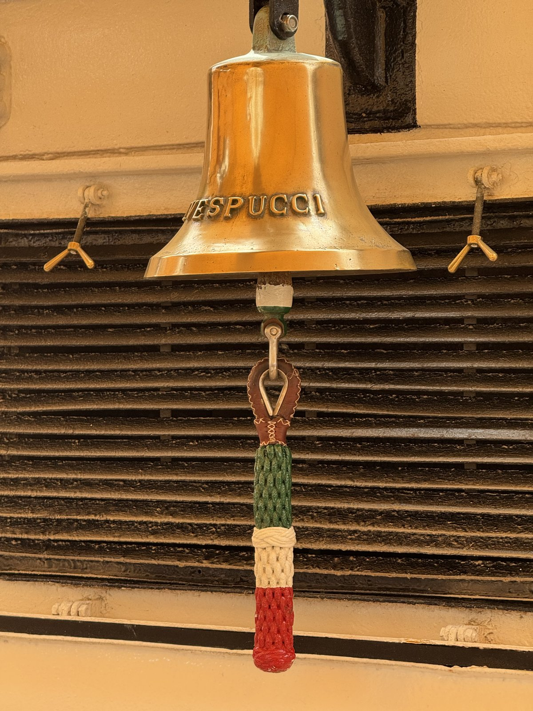
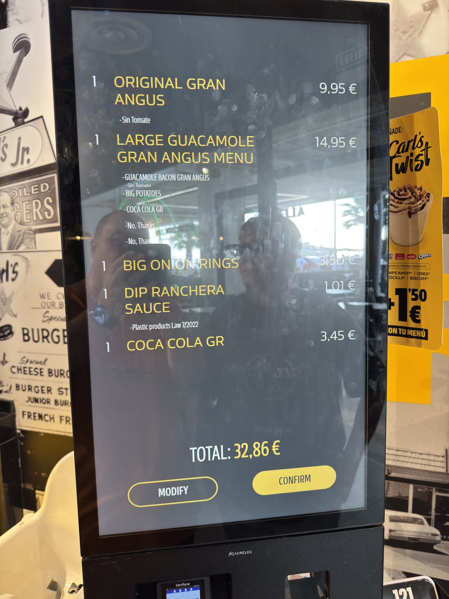
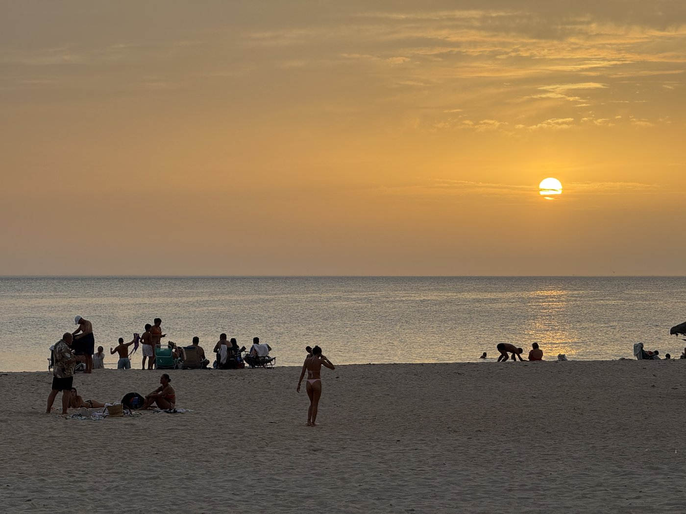

Gestern Abend gab es wieder Livemusik — erst vom Strand, später noch aus dem Hotel. Aber schlafen konnten wir trotzdem ziemlich gut. Und lange.
Langsam setzt der Urlaubsmodus ein: erstmal ausschlafen und erst gegen zehn zum Frühstück, heute mal im Hotel. Guter Standard mit leckerem Aufschnitt, und die Kaffeemaschine kann sogar Cortados. Dummerweise wollten zum Ende der Frühstückszeit sehr viele Leute den Aufzug benutzen, so daß wir auf die Treppe ausgewichen und die sechs Stockwerke hochgekraxelt sind. Ich bin echt nix mehr gewohnt — danach hätteste mich glatt in ein Sauerstoffzelt stopfen können.
Die Schlange
Zum Glück hatten wir heute ein ganz entspanntes Programm. Um die Mittagszeit haben wir den Stadtbus genommen, der ebenfalls fast direkt am Hotel hält. Damit kommt man hervorragend in den Hafen, wo bis morgen noch die Amerigo Vespucci liegt — und heute nur ein Kreuzfahrer, also nicht mehr über neuntausend Gäste wie gestern.
Ich werde den Eindruck nicht los, daß dieser Umstand in die Entscheidung eingeflossen sein könnte, das Open Ship auf Donnerstag und Samstag zu legen und den Freitag auszulassen.


Sechsunddreißig Jahre
Damit schließt sich für mich ein Kreis. Auf unserer Auslandsausbildungsreise mit der Gorch Fock 1990 waren wir unter anderem in Cádiz — und in Livorno waren wir der Amerigo Vespucci begegnet. Seinerzeit hatte ich es leider verpaßt, dort an Bord zu gehen.
Um so mehr hat es mich gefreut, das heute nachholen zu können. Fast sechsunddreißig Jahre später.


Und was für ein schönes Schiff sie ist. Ich wünsche den Kadetten an Bord gute Erfahrungen — denn der Dienst auf einem Großsegler ist hart. Auch wenn heute vieles moderner gelöst ist: Segel setzen und bergen bleibt Handarbeit in der Höhe, bei jedem Wetter und zu jeder Tageszeit. Rückblickend war die Erfahrung für mich trotzdem sehr schön und prägend.
Eigentlich hatte ich nach dem Open Ship noch geplant, mit der Fähre nach El Puerto de Santa María überzusetzen, dort vom Hafen zum Bahnhof zu verlegen und mit der Bahn zurück nach Cádiz zu fahren. Das geht alles mit der Tarjeta Consorcio, der Verkehrsverbundkarte der Region, ganz ausgezeichnet. Aber da wir doch ein wenig fix und alle waren, haben wir den Plan kurzfristig geändert und sind mit der Fähre sofort wieder zurückgefahren. Ausgestiegen sind wir dort erst zehn Tage später.
Activate Windows
Am Abend waren wir noch draußen und haben den Burger Joint ausprobiert, der uns empfohlen worden war. Gar nicht schlecht — aber viel zu viel. Ich werd alt, verdammt.
Das Schwierigste daran war der Bestellvorgang. Es gab drei Terminals: Eines war ausgeschaltet, das zweite reagierte nicht auf Eingaben — bis ich unten rechts einen Dialog eingeblendet sah, der die Eingabe über den Touchscreen verhinderte: Activate Windows…

Danach haben wir noch den Sonnenuntergang an der Strandpromenade genossen, untermalt von dem Straßenmusiker, der auch tags zuvor schon dort gespielt hatte. Ein Lied kannte ich sogar: Depende — öffnet YouTube in einem neuen Tab, im Original von Jarabe de Palo. Das mochte ich doch sehr.
Der verlinkte Song liegt bei YouTube, nicht hier. Ein Klick verläßt diese Seite; dort gelten andere Regeln für Cookies und Daten, und das Video gehört seinen Urhebern.
